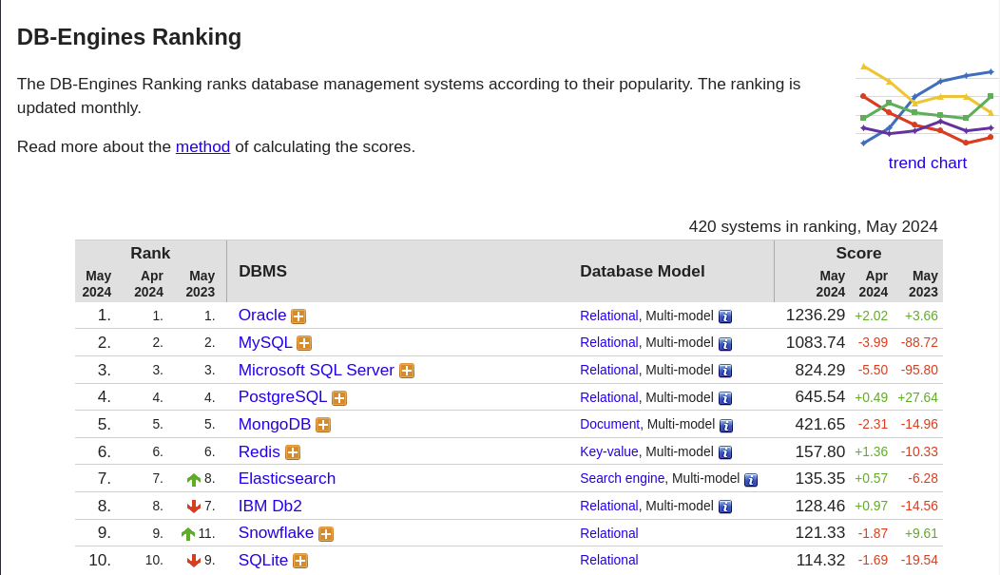

Disciplinas
-
BANCO DE DADOS-T01-2024-1 Concluído
Materiais
Vídeo 2 - Banco de Dados - Sistemas Gerenciadores de Bancos de Dados no Mercado. sendProfessor ministrante: José Eduardo Santarem Segundo.
Conteúdo
Sistemas Gerenciadores de Bancos de Dados no Mercado.
Market Share - Bancos de Dados (há uma infinidade de rankings):
 https://db-engines.com/en/rankingENTENDENDO SCORE DB-ENGINES RANKING.
- Elementos que compõem o Score:
- Número menções em Web Sites (Google e Bing)
- Interesse no sistema (Google Trends)
- Frequência de discussão em listas relevantes:
- Stack Overflow e DBA Stack Exchange
- Número de ofertas de emprego:
- Indeed e Simply Hired
- Número de Perfis profissionais que os sistemas são mencionados (Linkedin)
- Número de menções em rede social (Twitter)
TIPOS DE BANCOS.
- 7 dos 10 sistemas listados são primariamente BD relacionais.
- Oracle, Mysql, SQL Server, PostgreSQL, DB2, SQLite e Access
- MongoDB é de documentos.
- Redis é chave-valor.
- Elasticsearch é mecanismo de busca.
- 8 deles são de modelos múltiplos.
- Relacional, Documentos, grafos, espacial, rdf, time séries
BREVE ABORDAGEM SOBRE OS MAIS UTILIZADOS.
- A probabilidade de atuar com banco de dados usando Oracle, Mysql, Postgresql ou Sql Server é extremamente grande.
- Importante observar os detalhes desses produtos.
- Atualmente, com o advento do Big Data e das possibilidades tecnológicas disponíveis, bancos do tipo chave-valor, de documentos e de grafos passam a ser muito recorrentes também, mas ainda com uso restrito.
ORACLE.
- Uma das ferramentas mais usadas e robustas do mercado.
- Tem como principal virtude a robustez e confiabilidade.
- Empresa: Oracle
- Desde 1980
- Site: www.oracle.com/database
- Licença comercial (com uma versão express)
- Multiplataforma (AIX, HP-UX, Linux, OS X, Solaris, Windows, z/OS)
- Suporta SQL
MySQL.
- MySQL AB foi comprada pela Sun, que foi comprada pela Oracle em 2009.
- Integração com PHP foi uma grande sacada, pequenos projetos migraram rapidamente para MySQL.
- Empresa: Oracle
- Desde: 1995
- Site: www.mysql.com
- Open Source
- Multiplataforma (FreeBSD, Linux, OS X, Solaris, Windows)
- Suporta SQL
SQL SERVER.
- Um dos primeiros bancos de dados do mercado. Por muito tempo ficou restrito a plataforma Windows. Sempre prezou por uma interface amigável.
- Empresa: Microsoft
- Desde: 1989
- Site: www.microsoft.com/en-us/sql-server
- Licença comercial (com uma versão express)
- Multiplataforma (Windows e Linux)
- Suporta SQL
PostgreSQL.
- Muito robusto, muito utilizado em sistemas com muitos registros, um dos primeiros open source a implementar UTF-8. Com certeza, uma ferramenta open source (além de BD) das mais excepcionais.
- Responsável: PostgreSQL Global Development Group
- Desde: 1989
- Site: www.postgresql.org
- Open Source
- Multiplataforma (FreeBSD, HP-UX, Linux, NetBSD, OpenBSD, OS X, Solaris, Unix, Windows)
- Suporta SQL
COMO ESCOLHER?
- Compreender a variedade de critérios que podem ter impacto.
- Opção sempre por um software open source (ou, mais simplesmente, por um não pago)?
- Plataforma;
- Implementação em Cloud - Oferecido como DBaaS;
- Restrição com conectores ou linguagens;
- Escolha por modelo (relacional, objetos, grafo....);
- Tecnologias como controle de transações, triggers, stored procedures, map reduce, entrou outros...
O QUE MUDA BASEADO NA ESCOLHA?
- Como bancos de dados, são todos parecidos.
- Um SQL padrão funciona em todos.
- Há especificações da linguagem SQL, que são para uso exclusivo com determinados produtos (como funções). Isso pode determinar retrabalho em uma futura mudança de opção de produto.
- O mesmo serve para outros recursos do SGBD.
- Há ferramentas específicas (nativas ou não) para cada produto.
A DISCIPLINA BANCO DE DADOS.
- Nessa disciplina trataremos banco de dados de uma forma generalizada, tentando usar elementos pouco específicos de um ou outro produto de banco de dados.
- As aplicações práticas e exemplos serão implementadas no banco de dados MySQL, porque esse é o produto de banco de dados a ser utilizado na disciplina futura de projeto integrador.
- Observe, toda implementação é baseada em conceitos básicos que vimos nas primeiras duas semanas, mas a escolha do produto é também muito importante!